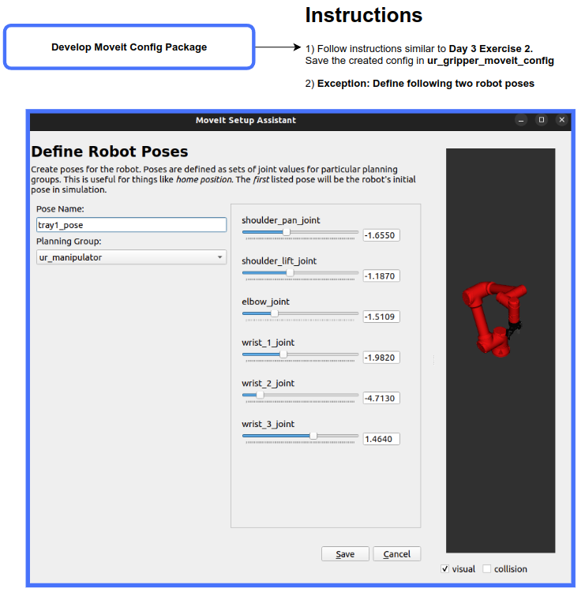
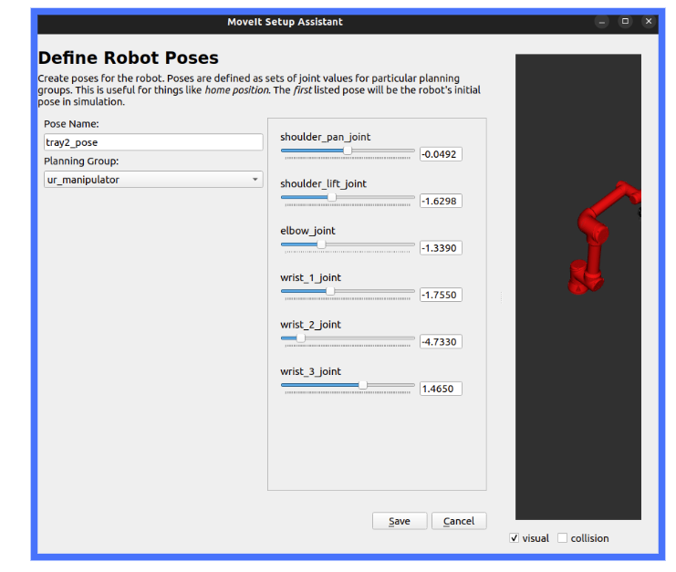

ROS-I Manipulation Training Assessment
Contents:
High Level Objective
Assessment Section 1
Assessment Section 2
Assessment Section 3
Assessment Section 4
Assessment Section 5
ROS-I Manipulation Training Assessment
Assessment Section 1
View page source
Assessment Section 1

Develop Moveit Config with UR5e robot and Robotiq 2F Gripper with Two Defined Robot Poses
 